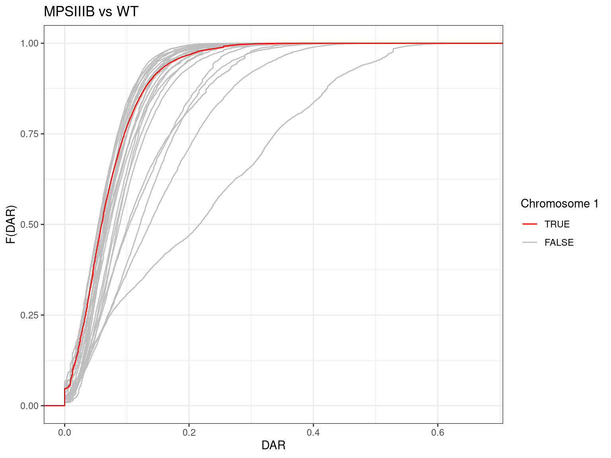
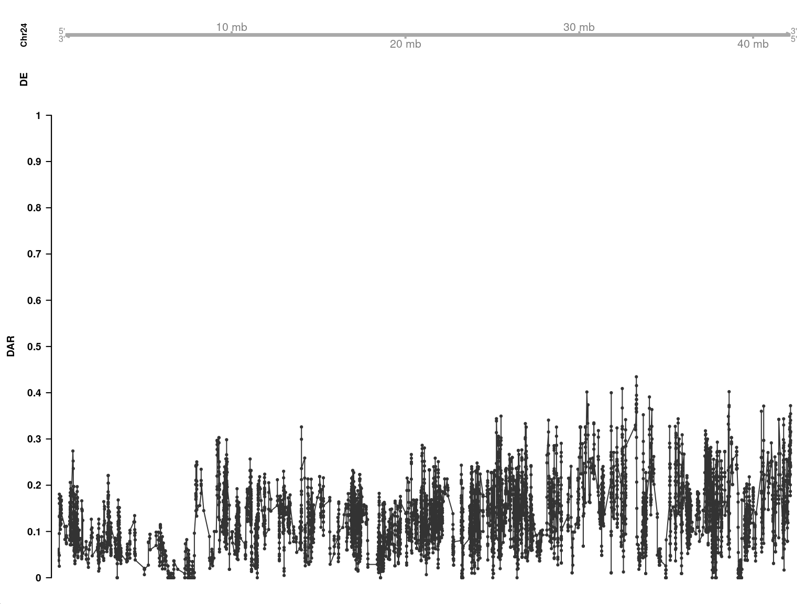

Last updated: 2023-08-16
Checks: 6 1
Knit directory: 2022_MPSIII_3mBrainRNAseq/
This reproducible R Markdown analysis was created with workflowr (version 1.7.0). The Checks tab describes the reproducibility checks that were applied when the results were created. The Past versions tab lists the development history.
The R Markdown file has unstaged changes. To know which version of
the R Markdown file created these results, you’ll want to first commit
it to the Git repo. If you’re still working on the analysis, you can
ignore this warning. When you’re finished, you can run
wflow_publish to commit the R Markdown file and build the
HTML.
Great job! The global environment was empty. Objects defined in the global environment can affect the analysis in your R Markdown file in unknown ways. For reproduciblity it’s best to always run the code in an empty environment.
The command set.seed(20220423) was run prior to running
the code in the R Markdown file. Setting a seed ensures that any results
that rely on randomness, e.g. subsampling or permutations, are
reproducible.
Great job! Recording the operating system, R version, and package versions is critical for reproducibility.
Nice! There were no cached chunks for this analysis, so you can be confident that you successfully produced the results during this run.
Great job! Using relative paths to the files within your workflowr project makes it easier to run your code on other machines.
Great! You are using Git for version control. Tracking code development and connecting the code version to the results is critical for reproducibility.
The results in this page were generated with repository version f605249. See the Past versions tab to see a history of the changes made to the R Markdown and HTML files.
Note that you need to be careful to ensure that all relevant files for
the analysis have been committed to Git prior to generating the results
(you can use wflow_publish or
wflow_git_commit). workflowr only checks the R Markdown
file, but you know if there are other scripts or data files that it
depends on. Below is the status of the Git repository when the results
were generated:
Ignored files:
Ignored: .Rproj.user/
Ignored: analysis/dar-analysis_BC.html
Ignored: analysis/enrichment_AC.html
Ignored: analysis/enrichment_BC.html
Untracked files:
Untracked: analysis/enrichment_AB.Rmd
Untracked: analysis/enrichment_AC.Rmd
Untracked: analysis/enrichment_BC.Rmd
Untracked: data/dar-analysis/AB/geneDar.Rds
Untracked: data/dar-analysis/AC/geneDar.Rds
Untracked: data/dar-analysis/BC/geneDar.Rds
Unstaged changes:
Modified: analysis/_site.yml
Modified: analysis/dar-analysis_AB.Rmd
Modified: analysis/dar-analysis_AC.Rmd
Modified: analysis/dar-analysis_BC.Rmd
Deleted: data/dar-analysis/AB/DAR.Rds
Deleted: data/dar-analysis/AB/alleleCounts.Rds
Deleted: data/dar-analysis/AB/geneDAR.Rds
Deleted: data/dar-analysis/AC/DAR.Rds
Deleted: data/dar-analysis/AC/alleleCounts.Rds
Deleted: data/dar-analysis/AC/geneDAR.Rds
Deleted: data/dar-analysis/BC/DAR.Rds
Deleted: data/dar-analysis/BC/alleleCounts.Rds
Deleted: data/dar-analysis/BC/geneDAR.Rds
Note that any generated files, e.g. HTML, png, CSS, etc., are not included in this status report because it is ok for generated content to have uncommitted changes.
These are the previous versions of the repository in which changes were
made to the R Markdown (analysis/dar-analysis_BC.Rmd) and
HTML (docs/dar-analysis_BC.html) files. If you’ve
configured a remote Git repository (see ?wflow_git_remote),
click on the hyperlinks in the table below to view the files as they
were in that past version.
| File | Version | Author | Date | Message |
|---|---|---|---|---|
| Rmd | 788e886 | baerlachlan | 2023-03-10 | Initial DAR analysis on BC |
| html | 788e886 | baerlachlan | 2023-03-10 | Initial DAR analysis on BC |
Load libraries and set global options.
suppressPackageStartupMessages({
## Common
library(tidyverse)
library(magrittr)
library(here)
library(AnnotationHub)
library(purrr)
library(scales)
library(kableExtra)
# library(tictoc) # Causes a bug in rowRanges()
library(ggrepel)
library(RColorBrewer)
library(ggpubr)
library(pander)
library(rmarkdown)
library(viridis)
## Project specific
library(VariantAnnotation)
library(Gviz)
library(zoo)
library(msigdbr)
library(readxl)
library(limma)
})An R package for DAR analysis is currently under development and will be used for the following analysis. The core functionally of the package is complete (as of 21/06/23). However some subtleties may change and new features will be added as its developmentment progresses. This means some of the following code may break, but a simple fix that produces the same results will always exist. To install the package while it is still in development, uncomment the code in the chunk below.
# BiocManager::install("baerlachlan/darr")
library(darr)if (interactive()) setwd(here::here())
theme_set(theme_bw())# By default Gviz expects UCSC chromosome names
# We're working with Ensembl so let's turn this off
options(ucscChromosomeNames = FALSE)This document contains the Differential Allelic Representation (DAR) analysis for the MPS-III A/B arm of the experiment.
ens_species <- "Danio rerio"
ens_release <- "101"
ens_assembly <- "GRCz11"Grab genome feature annotations for Danio rerio Ensembl release 101 (genome assembly GRCz11).
ah <- AnnotationHub() %>%
subset(species == ens_species) %>%
subset(rdataclass == "EnsDb")
ahId <- ah$ah_id[str_detect(ah$title, ens_release)]
ensDb <- ah[[ahId]]# Filter for primary chromosomes
chrInfo <- getChromInfoFromEnsembl(ens_assembly, release = ens_release) %>%
dplyr::filter(coord_system == "chromosome")
primary_chrs <- chrInfo$namegenes <- genes(ensDb, filter = SeqNameFilter(primary_chrs))
mcols(genes) <- mcols(genes)[
c("gene_id", "gene_name", "gene_biotype", "entrezid")
]Load and clean the sample metadata by renaming columns following
R naming conventions and setting categorical variables as
factors. Also append sample file basenames from a file I created
(data/sample_basenames.csv), as we will need these later.
This metadata contains information for all samples in the experiment, so
let’s filter for only samples in the A/B dataset.
expArm <- "BC"metadata <- read_xlsx(here("data/meta_final.xlsx")) %>%
dplyr::rename(
rin = RIN,
sex = Sex,
rna_batch = rnaBatch,
mps = MPS,
uln = ULN,
home_tank = `Home tank`,
dob = DOB,
death = Death
) %>%
mutate(
sex = as.factor(sex),
genotype = case_when(
genotype == "wt" ~ "WT",
genotype == "het" ~ "sgsh_het",
genotype == "naglu" ~ "MPSIIIB",
genotype == "sgsh" ~ "MPSIIIA",
genotype == "hgsnat" ~ "MPSIIIC"
),
genotype = as.factor(genotype),
home_tank = as.factor(home_tank)
) %>%
left_join(read_csv(here("data/sample_basenames.csv"))) %>%
dplyr::filter(mps == expArm) %>%
droplevels()metadata %>%
kable(
align = "l",
caption = "Sample metadata for the MPS-III A/B arm of the experiment"
) %>%
kable_styling(
bootstrap_options = c("striped", "hover", "condensed", "responsive")
)| sample | rin | sex | genotype | rna_batch | mps | uln | home_tank | dob | death | basename |
|---|---|---|---|---|---|---|---|---|---|---|
| BC1 | 7.7 | female | MPSIIIB | 2022-02-15 | BC | 22-01859 | P2_lay3_tank1 | 2021-08-25 | 2021-12-02 | 22-01859_S21 |
| BC2 | 8.8 | male | MPSIIIB | 2022-02-15 | BC | 22-01860 | P2_lay1_tank1 | 2021-07-07 | 2022-10-14 | 22-01860_S22 |
| BC3 | 7.1 | male | MPSIIIC | 2022-02-15 | BC | 22-01861 | P2_lay3_tank2.1 | 2021-08-25 | 2021-12-02 | 22-01861_S23 |
| BC4 | 8.6 | male | MPSIIIB | 2022-02-15 | BC | 22-01862 | P2_lay3_tank2.1 | 2021-08-25 | 2021-12-02 | 22-01862_S24 |
| BC5 | 8.5 | female | MPSIIIB | 2022-02-15 | BC | 22-01863 | P2_lay3_tank2.1 | 2021-08-25 | 2021-12-02 | 22-01863_S25 |
| BC6 | 7.3 | male | WT | 2022-02-15 | BC | 22-01864 | P2_lay3_tank2.2 | 2021-08-25 | 2021-12-02 | 22-01864_S26 |
| BC7 | 7.3 | male | MPSIIIC | 2022-02-15 | BC | 22-01865 | P2_lay3_tank2.2 | 2021-08-25 | 2021-12-02 | 22-01865_S27 |
| BC8 | 7.2 | female | MPSIIIC | 2022-02-15 | BC | 22-01866 | P2_lay3_tank2.2 | 2021-08-25 | 2021-12-02 | 22-01866_S28 |
| BC9 | 7.7 | female | WT | 2022-02-15 | BC | 22-01867 | P2_lay1_tank2 | 2021-07-07 | 2022-10-14 | 22-01867_S29 |
| BC10 | 8.8 | male | WT | 2022-02-15 | BC | 22-01868 | P2_lay1_tank2 | 2021-07-07 | 2022-10-14 | 22-01868_S30 |
| BC11 | 7.4 | female | WT | 2022-02-16 | BC | 22-01869 | P2_lay1_tank1 | 2021-07-07 | 2022-10-14 | 22-01869_S31 |
| BC12 | 6.7 | female | WT | 2022-02-16 | BC | 22-01870 | P2_lay3_tank2.1 | 2021-08-25 | 2021-12-02 | 22-01870_S32 |
| BC13 | 7.4 | female | MPSIIIC | 2022-02-16 | BC | 22-01871 | P2_lay1_tank1 | 2021-07-07 | 2022-10-14 | 22-01871_S33 |
| BC14 | 5.2 | male | MPSIIIC | 2022-02-16 | BC | 22-01872 | P2_lay1_tank2 | 2021-07-07 | 2022-10-14 | 22-01872_S34 |
| BC15 | 9.6 | male | MPSIIIC | 2022-02-16 | BC | 22-01873 | P2_lay3_tank1 | 2021-08-25 | 2021-12-02 | 22-01873_S35 |
| BC16 | 9.7 | male | WT | 2022-02-16 | BC | 22-01874 | P2_lay3_tank1 | 2021-08-25 | 2021-12-02 | 22-01874_S36 |
| BC17 | 9.2 | female | WT | 2022-02-16 | BC | 22-01875 | P2_lay1_tank1 | 2021-07-07 | 2022-10-14 | 22-01875_S37 |
| BC18 | 6.8 | female | MPSIIIB | 2022-02-16 | BC | 22-01876 | P2_lay3_tank1 | 2021-08-25 | 2021-12-02 | 22-01876_S38 |
| BC19 | 9.8 | male | WT | 2022-06-05 | BC | 22-01877 | P1_lay1.1 | 2021-08-06 | 2021-11-12 | 22-01877_S39 |
| BC21 | 9.7 | male | WT | 2022-06-05 | BC | 22-01879 | P1_lay1.1 | 2021-08-06 | 2021-11-12 | 22-01879_S40 |
| BC23 | 9.8 | male | MPSIIIB | 2022-06-05 | BC | 22-01881 | P1_lay1.1 | 2021-08-06 | 2021-11-12 | 22-01881_S41 |
| BC24 | 9.8 | male | MPSIIIB | 2022-06-05 | BC | 22-01882 | P1_lay1.1 | 2021-08-06 | 2021-11-12 | 22-01882_S42 |
| BC25 | 9.6 | female | MPSIIIB | 2022-06-05 | BC | 22-01883 | P1_lay1.2 | 2021-08-06 | 2021-11-12 | 22-01883_S43 |
| BC26 | 9.6 | female | WT | 2022-06-05 | BC | 22-01884 | P1_lay1.2 | 2021-08-06 | 2021-11-12 | 22-01884_S44 |
| BC27 | 9.8 | female | WT | 2022-06-05 | BC | 22-01885 | P1_lay1.2 | 2021-08-06 | 2021-11-12 | 22-01885_S45 |
Set up colours for plotting by genotype. Going with a
colourblind-friendly palette (Set2) for best
accessibility.
genoCols <- metadata$genotype %>%
levels() %>%
length() %>%
brewer.pal("Set2") %>%
setNames(levels(metadata$genotype))Load in the dgeList and topTables from
Karissa’s DE analysis.
dgeList <- readRDS(here("data/R_objects/dge_bc.rds"))topTables <- readRDS(here("data/R_objects/toptab_bc_cqn.rds"))Also pull the gene IDs for DE genes.
deGenes <- sapply(topTables, function(x){
dplyr::filter(x, DE) %>%
pull(gene_id)
}, simplify = FALSE)DAR analysis is performed using genotype calls from variant calling
software. Here the GATK best practices workflow for RNAseq
short variant discovery was followed to produce a multi-sample
VCF file containing information for any single nucleotide
locus that varied in at least one sample. Note that specific filters
were applied to only select loci with considerable evidence for
variation (see the Snakemake workflow in this repository for more
information).
Genotype data from the VCF file is parsed into a
GRanges class object using the darr package.
This file is large and therefore does not exist in the Git repository.
Phasing information is also removed when reading the genotypes as it is
not required for DAR analysis and complicates downstream processing.
vcf_path <- file.path(
"/hpcfs/users/a1647910/2022_MPSIII_3mBrainRNAseq/code",
"analysis-variants_BC/results/09_variants/6_select/all_samples.vcf.gz"
)
genotypes <- readGenotypes(
file = vcf_path,
unphase = TRUE,
genome = genome(ensDb)
)Genotypes are reported as numeric indices. 0 indicates
the reference allele, 1 is the first alternate allele,
2 is the second alternate allele, and so on. For DAR
analysis, we work directly with the indices as they are consistent
across all samples for a single variant position.
We aim to calculate a DAR metric at each suitable variant locus. This
requires us to firstly summarise the genotype data into counts of the
alleles reported at each variant locus. First we define our sample
grouping structure as a list, where each element contains a
character vector of samples within a single group.
samplesByGroup <- metadata %>%
split(f = .$genotype) %>%
sapply(function(x){
pull(x, basename)
}, simplify = FALSE)Now at each locus we can count the number of alleles that exist
within the groups. This returns a GRangesList with each
element corresponding to a different sample group.
alleleCounts <- countAlleles(genotypes = genotypes, groups = samplesByGroup)Not all samples have genotype calls, so we normalise by converting the allele counts into a proportion of total counts at each locus. We also filter variant loci independently within each sample group with the default criterion: number of samples with called genotypes > number of samples with missing genotypes.
alleleProps <- countsToProps(counts = alleleCounts, filter = TRUE)Now that we have normalised values of allelic representation at each variant locus within our sample groups, we can calculate the DAR metric between groups. Firstly, we define our contrasts of interest.
contrasts <- makeContrasts(
B_vs_WT = MPSIIIB - WT,
C_vs_WT = MPSIIIC - WT,
levels = names(alleleProps)
)DAR is calculated by firstly determining the Euclidean distance
between allelic proportions of the contrasted sample groups. The
Euclidean distance is then converted to the DAR metric by dividing by
\[\sqrt{2}\], resulting in an
easy-to-interpret value between 0 and 1, where 0 represents identical
allelic representation and 1 represents complete diversity. This is
handled within the dar() function by passing our allelic
proportions and intended contrasts as arguments.
Two types of DAR values are reported by the dar()
function as metadata columns of the resulting GRanges
objects:
dar_origin: The raw DAR values calculated at single
nucleotide positions (the origin) between sample groups. This represents
a DAR estimate at a precise locus.dar_region: The mean of raw DAR values in a region
surrounding the origin. The size of the region is controlled using the
winSize argument, which establishes an elastic sliding
window to average the specified number of dar_origin values. This
represents a DAR estimate for the genomic region surrounding the origin
locus.winSize <- 5With a chosen elastic window size of 5 loci, this will smooth the DAR metric at each origin locus with the DAR values of the 2 loci either side.
dar <- dar(props = alleleProps, contrasts = contrasts, winSize = winSize)We now have DAR values for the common loci between the two sample
groups in each contrast. Each element of the resulting
GRangesList object represents a single contrast and are
named as defined in our contrasts object.
Plotting the empirical cumulative distribution function of DAR by chromosome is useful to determine whether the mutant chromosome contains higher DAR relative to other chromosomes. Here we highlight the chromosome containing the mutation to visually identify if this is the case. The naglu gene implicated with MPS-IIIB is located on chromosome 24. The hgnsat gene implicated with MPS-IIIC is located on chromosome 1.
plotDarECDF(dar$B_vs_WT, darVal = "region", highlight = "24") +
scale_colour_manual(values = c("red", "grey")) +
labs(title = "MPSIIIB vs WT")This dataset provides an interesting scenario where samples were genotyped at both the naglu and hgsnat loci. Samples within the MPS-IIIB experimental groups were selected so that they were wildtype at the hgsnat locus. All samples in the dataset originated from a single cross of double heterozygous parents, meaning that all samples in the MPS-IIIA experimental groups should share identical wildtype homologues of chromosome 1 (the chromosome of the hgsnat locus), disregarding recombination. This means that chromosome 1 should display relatively low DAR in the MPS-IIIA comparisons, so let’s take a look.
plotDarECDF(dar$B_vs_WT, darVal = "region", highlight = "1") +
scale_colour_manual(values = c("red", "grey")) +
labs(title = "MPSIIIB vs WT")
Chromosome 1 does indeed have very low DAR relative to the other chromosomes. This contributes evidence to the argument that genotype-based selection of samples is a key driver of DAR outcomes in RNA-seq experiments.
An analogous situation is present in the MPS-IIIC samples, where the samples should share near-identical wildtype homologues of chromosome 24. Let’s take a look at both.
plotDarECDF(dar$C_vs_WT, darVal = "region", highlight = "1") +
scale_colour_manual(values = c("red", "grey")) +
labs(title = "MPSIIIC vs WT")plotDarECDF(dar$C_vs_WT, darVal = "region", highlight = "24") +
scale_colour_manual(values = c("red", "grey")) +
labs(title = "MPSIIIC vs WT")Again we see relatively high DAR on the mutant chromosome (1), and relatively low DAR on the wildtype controlled chromosome (24).
From these plots we can predict that for each comparison, an overrepresentation of DE genes may exist on the respective mutant chromosomes, due to the potential of eQTL differences. However, the controlled wildtype chromosomes should exhibit far less of these false positives due to low DAR.
We can produce a localised visualisation to assess whether
differentially expressed genes (DEG) may be prone eQTL artefacts by
plotting the trend in DAR along a chromosomal axis and overlaying the
position of DEGs. This functionality has not yet been implemented in the
darr package, so let’s define a function here instead.
plotChrDar <- function(
dar, chromosome, features = GRanges(), foi = GRanges(),
darType = "b", highlight_features = TRUE,
title = ""
){
tracks <- list()
if (length(foi)) {
foi <- foi %>%
plyranges::filter(seqnames == chromosome) %>%
plyranges::mutate(symbol = gene_name)
foi_track <- GeneRegionTrack(
range = foi,
transcriptAnnotation = "symbol",
col = "white",
fill = "white",
showTranscriptId = TRUE,
fontcolor.group = "red",
cex.group = 0.6,
size = 0.5,
name = NULL
)
tracks <- append(tracks, foi_track)
}
axis_track <- GenomeAxisTrack(
add53 = TRUE,
add35 = TRUE,
name = paste0("Chr", chromosome),
showTitle = TRUE,
size = 1
)
if (length(foi)) {
axis_track <- HighlightTrack(
trackList = list(axis_track),
range = foi
)
}
tracks <- append(tracks, axis_track)
if (length(features)) {
features <- features %>%
plyranges::filter(seqnames == chromosome) %>%
plyranges::mutate(symbol = gene_name)
features_track <- AnnotationTrack(
range = features,
name = "DE",
shape = "box",
fill = "darkgray",
group = features$gene_name,
groupAnnotation = "group",
fontcolor.group = 1,
cex.group = 0.6,
size = 0.4
)
tracks <- append(tracks, features_track)
}
dar_track <- dar[,"dar_region"] %>%
plyranges::filter(seqnames == chromosome) %>%
DataTrack(
type = darType,
name = "DAR",
size = 8,
window = -1,
windowSize = 1,
cex = 0.4,
col = "grey20",
col.axis = "black",
yTicksAt = seq(0, 1, 0.1),
ylim = c(0, 1)
)
if (highlight_features) {
if (all(length(features) & length(foi))) {
ranges <- c(features, foi)
} else if (length(features)) {
ranges <- features
} else if (length(foi)) {
ranges <- foi
} else {
ranges <- GRanges()
}
dar_track <- HighlightTrack(
trackList = list(dar_track),
range = ranges,
col = c(rep("#ffe0e0", length(features)), rep("red", length(foi))),
fill = c(rep("#ffe0e0", length(features)), rep("red", length(foi)))
)
}
tracks <- append(tracks, dar_track)
plotTracks(
trackList = tracks,
main = title,
cex.main = 1,
cex.title = 0.6,
col.title = "black",
background.title = "white"
)
}First let’s look at the mutant chromosome, as this was identified as having the highest average DAR from the ECDF we plotted above.
plotChrDar(
dar = dar$B_vs_WT,
chromosome = "24",
features = genes[genes$gene_id %in% deGenes$`MPS-IIIB`],
foi = genes[genes$gene_name == "naglu"]
)And comparing this to the controlled wildtype chromosome 1:
plotChrDar(
dar = dar$B_vs_WT,
chromosome = "1",
features = genes[genes$gene_id %in% deGenes$`MPS-IIIB`]
)The mutant chromosome also showed high DAR in the MPS-IIIC vs. WT comparison.
plotChrDar(
dar = dar$C_vs_WT,
chromosome = "1",
features = genes[genes$gene_id %in% deGenes$`MPS-IIIC`],
foi = genes[genes$gene_name == "hgsnat"]
)Again comparing to the controlled wildtype chromosome 24:
plotChrDar(
dar = dar$C_vs_WT,
chromosome = "24",
features = genes[genes$gene_id %in% deGenes$`MPS-IIIC`]
)
We can assign DAR values to genes within the dataset to provide an
estimate of the potential for a gene’s expression to be impacted by
eQTLs. eQTLs don’t necessarily exist within the gene itself, so it is
preferable to use smoothed DAR values (dar_region metadata
column in the dar object) as an estimate of DAR within a
region. First we need to convert the ranges of our dar
object to represent regions. Here we also extend the edge ranges of each
chromosome to encompass the entire chromosome, such that genes in these
regions also get assigned a DAR value.
darRegions <- convertRanges(dar, extendEdges = TRUE)geneDar <- assignFeatureDar(genes, darRegions, darVal = "region")We will save these assigned values for use in further analysis.
geneDar_path <- file.path(here("data/dar-analysis"), expArm, "geneDar.Rds")
saveRDS(geneDar, geneDar_path)
sessionInfo()R version 4.3.1 (2023-06-16)
Platform: x86_64-pc-linux-gnu (64-bit)
Running under: Ubuntu 20.04.6 LTS
Matrix products: default
BLAS: /usr/lib/x86_64-linux-gnu/blas/libblas.so.3.9.0
LAPACK: /usr/lib/x86_64-linux-gnu/lapack/liblapack.so.3.9.0
locale:
[1] LC_CTYPE=en_AU.UTF-8 LC_NUMERIC=C
[3] LC_TIME=en_AU.UTF-8 LC_COLLATE=en_AU.UTF-8
[5] LC_MONETARY=en_AU.UTF-8 LC_MESSAGES=en_AU.UTF-8
[7] LC_PAPER=en_AU.UTF-8 LC_NAME=C
[9] LC_ADDRESS=C LC_TELEPHONE=C
[11] LC_MEASUREMENT=en_AU.UTF-8 LC_IDENTIFICATION=C
time zone: Australia/Adelaide
tzcode source: system (glibc)
attached base packages:
[1] grid stats4 stats graphics grDevices utils datasets
[8] methods base
other attached packages:
[1] ensembldb_2.24.0 AnnotationFilter_1.24.0
[3] GenomicFeatures_1.52.1 AnnotationDbi_1.62.1
[5] darr_0.99.0 limma_3.56.2
[7] readxl_1.4.2 msigdbr_7.5.1
[9] zoo_1.8-12 Gviz_1.44.0
[11] VariantAnnotation_1.46.0 Rsamtools_2.16.0
[13] Biostrings_2.68.1 XVector_0.40.0
[15] SummarizedExperiment_1.30.2 Biobase_2.60.0
[17] GenomicRanges_1.52.0 GenomeInfoDb_1.36.1
[19] IRanges_2.34.1 S4Vectors_0.38.1
[21] MatrixGenerics_1.12.2 matrixStats_1.0.0
[23] viridis_0.6.3 viridisLite_0.4.2
[25] rmarkdown_2.22 pander_0.6.5
[27] ggpubr_0.6.0 RColorBrewer_1.1-3
[29] ggrepel_0.9.3 kableExtra_1.3.4
[31] scales_1.2.1 AnnotationHub_3.8.0
[33] BiocFileCache_2.8.0 dbplyr_2.3.2
[35] BiocGenerics_0.46.0 here_1.0.1
[37] magrittr_2.0.3 lubridate_1.9.2
[39] forcats_1.0.0 stringr_1.5.0
[41] dplyr_1.1.2 purrr_1.0.1
[43] readr_2.1.4 tidyr_1.3.0
[45] tibble_3.2.1 ggplot2_3.4.2
[47] tidyverse_2.0.0 workflowr_1.7.0
loaded via a namespace (and not attached):
[1] later_1.3.1 BiocIO_1.10.0
[3] bitops_1.0-7 filelock_1.0.2
[5] cellranger_1.1.0 XML_3.99-0.14
[7] rpart_4.1.19 lifecycle_1.0.3
[9] rstatix_0.7.2 rprojroot_2.0.3
[11] vroom_1.6.3 processx_3.8.1
[13] lattice_0.21-8 backports_1.4.1
[15] Hmisc_5.1-0 sass_0.4.6
[17] jquerylib_0.1.4 yaml_2.3.7
[19] httpuv_1.6.11 DBI_1.1.3
[21] abind_1.4-5 zlibbioc_1.46.0
[23] rvest_1.0.3 biovizBase_1.48.0
[25] RCurl_1.98-1.12 nnet_7.3-19
[27] rappdirs_0.3.3 git2r_0.32.0
[29] GenomeInfoDbData_1.2.10 svglite_2.1.1
[31] codetools_0.2-19 DelayedArray_0.26.3
[33] xml2_1.3.4 tidyselect_1.2.0
[35] farver_2.1.1 base64enc_0.1-3
[37] webshot_0.5.4 GenomicAlignments_1.36.0
[39] jsonlite_1.8.5 ellipsis_0.3.2
[41] Formula_1.2-5 systemfonts_1.0.4
[43] tools_4.3.1 progress_1.2.2
[45] Rcpp_1.0.10 glue_1.6.2
[47] gridExtra_2.3 xfun_0.39
[49] withr_2.5.0 BiocManager_1.30.21
[51] fastmap_1.1.1 latticeExtra_0.6-30
[53] fansi_1.0.4 callr_3.7.3
[55] digest_0.6.32 timechange_0.2.0
[57] R6_2.5.1 mime_0.12
[59] colorspace_2.1-0 jpeg_0.1-10
[61] dichromat_2.0-0.1 biomaRt_2.56.1
[63] RSQLite_2.3.1 utf8_1.2.3
[65] generics_0.1.3 data.table_1.14.8
[67] rtracklayer_1.60.0 prettyunits_1.1.1
[69] httr_1.4.6 htmlwidgets_1.6.2
[71] S4Arrays_1.0.4 whisker_0.4.1
[73] pkgconfig_2.0.3 gtable_0.3.3
[75] blob_1.2.4 htmltools_0.5.5
[77] carData_3.0-5 plyranges_1.20.0
[79] ProtGenerics_1.32.0 png_0.1-8
[81] knitr_1.43 rstudioapi_0.14
[83] tzdb_0.4.0 rjson_0.2.21
[85] checkmate_2.2.0 curl_5.0.1
[87] cachem_1.0.8 BiocVersion_3.17.1
[89] parallel_4.3.1 foreign_0.8-84
[91] restfulr_0.0.15 pillar_1.9.0
[93] vctrs_0.6.3 promises_1.2.0.1
[95] car_3.1-2 xtable_1.8-4
[97] cluster_2.1.4 htmlTable_2.4.1
[99] evaluate_0.21 cli_3.6.1
[101] compiler_4.3.1 rlang_1.1.1
[103] crayon_1.5.2 ggsignif_0.6.4
[105] labeling_0.4.2 interp_1.1-4
[107] ps_1.7.5 getPass_0.2-2
[109] fs_1.6.2 stringi_1.7.12
[111] deldir_1.0-9 BiocParallel_1.34.2
[113] babelgene_22.9 munsell_0.5.0
[115] lazyeval_0.2.2 Matrix_1.5-4.1
[117] BSgenome_1.68.0 hms_1.1.3
[119] bit64_4.0.5 KEGGREST_1.40.0
[121] shiny_1.7.4 highr_0.10
[123] interactiveDisplayBase_1.38.0 broom_1.0.5
[125] memoise_2.0.1 bslib_0.5.0
[127] bit_4.0.5